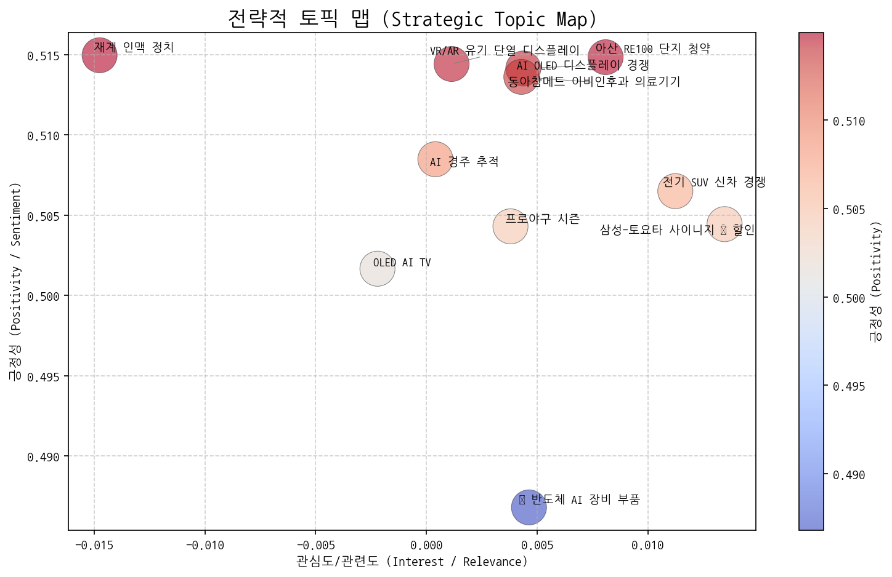
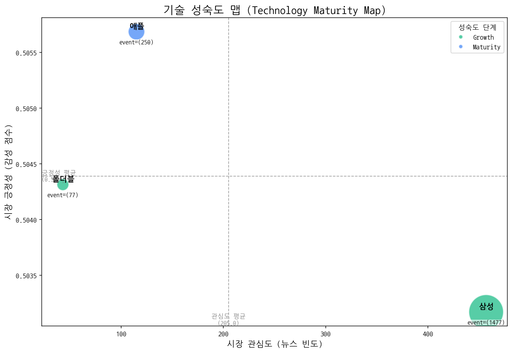
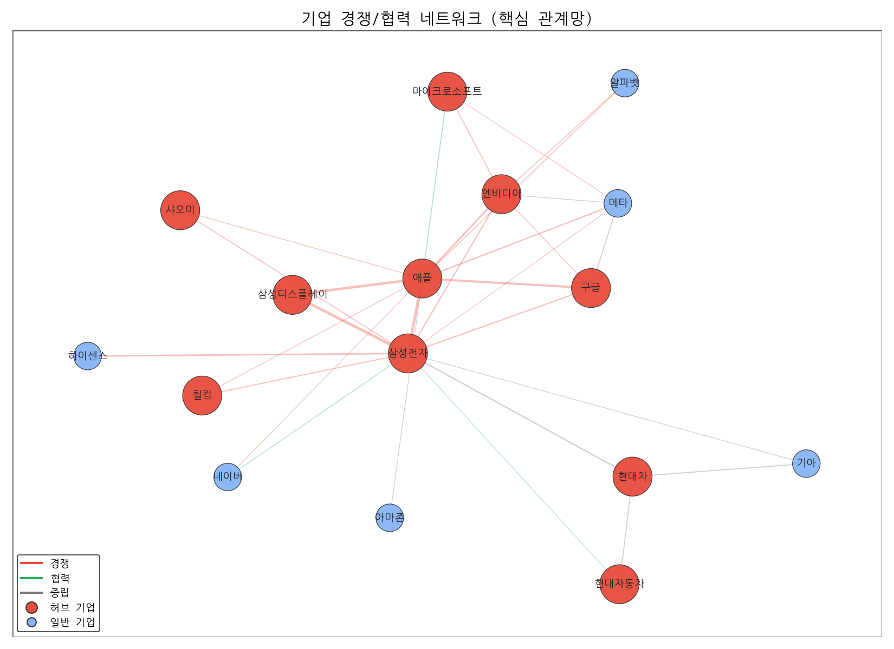
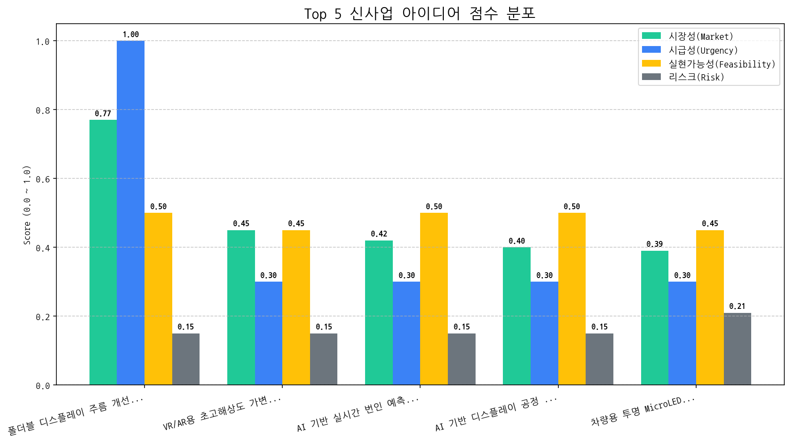

대상: CEO 및 경영진
작성자: 최고 전략 책임자 (CSO)
날짜: 2024년 5월 8일
AI OLED 디스플레이 경쟁 심화: AI 기술을 탑재한 OLED 디스플레이 시장 경쟁이 더욱 치열해지고 있습니다. 특히 OLED AI TV 시장 선점을 위한 경쟁사들의 움직임이 활발하며, 관련 기술 개발 및 투자가 확대되는 추세입니다.
미국 반도체 AI 장비 부품 공급망 불안정성: 미국 반도체 AI 장비 부품과 관련된 이슈들이 주요 토픽으로 부상하면서, 공급망 불안정성에 대한 우려가 제기되고 있습니다.
폴더블 디스플레이 시장 성장 가속화 및 주도권 경쟁: 폴더블 디스플레이 기술이 성숙 단계에 접어들면서 시장 성장세가 더욱 가팔라지고 있습니다. 특히 삼성전자를 중심으로 폴더블 기술 혁신이 지속적으로 이루어지고 있으며, 애플 또한 폴더블 시장 진입을 준비하면서 시장 주도권 경쟁이 심화될 것으로 예상됩니다.
기회 요인:
위협 요인:
AI OLED 기술 경쟁력 강화 및 시장 선점 전략 수립:
폴더블 디스플레이 기술 혁신 및 시장 주도권 확보:
미국 반도체 AI 장비 부품 공급망 다변화 및 리스크 관리:

알겠습니다. 주어진 토픽 데이터를 기반으로 4분면 분석과 액션 아이템 제안을 수행하겠습니다.
| 토픽명 | 요약 | 핵심 키워드 |
|---|---|---|
| AI OLED 디스플레이 경쟁 | AI 기술을 적용한 OLED 디스플레이 TV 시장에서 LG와 삼성전자를 중심으로 미국과 중국 간 기술 및 시장 경쟁 심화, 특히 반도체 기술이 중요한 요소로 작용. | ai, oled, 디스플레이 |
| OLED AI TV | LG의 AI 기술이 적용된 OLED TV, 특히 중국 시장 및 시니어 고객을 타겟으로 한 마이크로 LED 등 차세대 디스플레이 기술 경쟁 관련 뉴스. | oled, ai, tv |
| 美 반도체 AI 장비 부품 | 미국 중심의 반도체, AI, 장비, 부품, 소재 관련 사업 및 로봇 기술 동향과 거래일에 대한 분석. 핵심 기술 및 사업 관련 중요 이슈를 다룸. | 반도체, 미국, ai |
| 프로야구 시즌 | 삼성, NC, KT, LG 등 프로야구 팀들의 시즌 관련 소식 (경기, 결과, 전망 등) | samsung, its, will |
| 삼성-토요타 사이니지 車 할인 | 삼성전자 사이니지 기술이 토요타 자동차에 적용되고, 갤럭시 히어로 관련 프로모션과 함께 자동차 할인 행사도 진행될 가능성이 있는 내용입니다. | 사이니지, 토요타, 사이니지를 |
| 전기 SUV 신차 경쟁 | 포르쉐, 폴스타 등 전기차 브랜드의 새로운 SUV 모델 출시와 GV80 전기차 버전 등 시장 경쟁 심화 전망. | 주행, 전기차, 포르쉐 |
| VR/AR 유기 단열 디스플레이 | 머크의 신소재를 기반으로 VR/AR 기기에 적용될 수 있는 유기 단열 디스플레이 기술에 대한 연구 또는 개발 동향 (교수, 학생 관련 내용 포함). | 디스플레이, 머크, 교수 |
| 아산 RE100 단지 청약 | 아산에 조성되는 RE100 관련 단지의 1순위 청약 소식 및 84m2 규모, 최고 기업 등의 관련 정보. 서면 관련 내용 포함 가능성 있음. | 서면, re100, 단지 |
| 재계 인맥 정치 | 최창걸 고려아연 명예회장을 중심으로 재계(고려아연, 한화, GS)와 국민의힘 등 정치권 간의 연관성에 대한 내용으로 추정됨. 장관 임명 등과 관련된 논의 가능성도 있음. | 부회장, 비철금속, 명예회장 |
| AI 경주 추적 | AI가 Vision AI 기술을 활용하여 경주(특히 달리는 말의 경주)를 추적하고 분석하는 기술 또는 시스템에 대한 내용입니다. | race, vision, 말을 |
| 동아참메드 이비인후과 의료기기 | 동아참메드의 이비인후과 의료기기 (특히 v1 smart) 및 관련 헬스케어 제품이 Medical Fair에서 주목받고 있음을 나타냅니다. | v1, 이비인후과, v1 smart |

| 기술 | 단계 | 판단 근거 | |:-----|:---------|:-------------------------------------------------------------------------------------------------------------| | 폴더블 | Growth | 폴더블 기술 관련 출시 이벤트가 투자 및 수주 건수보다 압도적으로 많아 시장이 성장 단계에 있음을 시사합니다. | | 애플 | Maturity | 높은 출시 빈도와 적당한 투자, 낮은 수주 빈도로 보아 애플 기술은 이미 시장에 안정적으로 자리 잡은 성숙기에 있다고 판단됩니다. | | 삼성 | Growth | 높은 출시 빈도와 투자 건수는 삼성 기술이 시장에서 성장하고 있으며, 뉴스 언급 빈도와 시장 감성 점수가 보통 수준인 점을 고려했을 때, 성숙 단계로 넘어가기 전 성장 단계에 있다고 판단됩니다. || 기업 | 핵심 집중 토픽 | 전략 방향성 해석 |
|---|---|---|
| 삼성전자 | AI OLED 디스플레이 경쟁, OLED AI TV, 삼성-토요타 사이니지 車 할인 | 삼성전자는 AI 기술을 활용한 OLED 디스플레이 경쟁력 강화와 더불어, B2B 시장에서 토요타와의 협력을 통해 차량용 사이니지 사업 확장에 집중하며, AI 기반의 차세대 TV 시장을 선점하려는 전략을 추진하고 있습니다. |
| 애플 | AI OLED 디스플레이 경쟁, OLED AI TV, 美 반도체 AI 장비 부품 | 애플은 AI 기술을 활용한 디스플레이 경쟁력 강화와 프리미엄 TV 시장 진출을 통해 하드웨어 혁신을 추구하는 동시에, 미국 내 AI 반도체 공급망 확보를 통해 AI 역량 내재화 및 경쟁 우위 확보에 집중하고 있습니다. |
| LG전자 | AI OLED 디스플레이 경쟁, OLED AI TV, 美 반도체 AI 장비 부품 | LG전자는 AI 기술을 융합한 OLED 디스플레이 경쟁력 강화에 집중하며, 특히 미국 반도체 AI 장비 부품 시장을 공략하여 미래 성장 동력을 확보하려는 전략을 추진하고 있습니다. |

| 주요 관계 | 유형 | 액션 아이템 제안 |
|---|---|---|
| 삼성전자 ↔ 애플 | rivalry | 애플 신제품 분석 및 삼성 제품 차별화 포인트 발굴 |
| 삼성디스플레이 ↔ 삼성전자 | rivalry | 삼성전자 TV 전략 분석, 디스플레이 차별화 포인트 발굴 |
| 삼성디스플레이 ↔ 애플 | rivalry | 애플 신제품 출시 정보 집중 분석 및 차별화 전략 검토. |
두 기업이 함께 언급된 문맥 안에서, 키워드의 빈도가 경쟁 > 협력인 경우 'rivalry', 반대의 경우 'partnership'으로 분류
| 아이디어 | 가치 제안 | 총점 |
|---|---|---|
| 폴더블 디스플레이 주름 개선을 위한 형상 기억 합금 적용 기술 | 형상 기억 합금을 디스플레이 후면에 적용하여 접히는 부분의 응력을 분산시키고, 주름 발생을 최소화. 기존 폴더블 디스플레이 대비 주름을 50% 이상 감소시키고, 내구성을 향상. 경쟁사 대비 우수한 주름 개선 효과 및 내구성. | 6.6 |
| VR/AR용 초고해상도 가변 초점 OLED 디스플레이 | 초고해상도(8K 이상)와 가변 초점 기능을 결합한 OLED 디스플레이. 사용자의 시선에 따라 초점을 실시간으로 조절하여 현실감과 몰입감을 극대화하고, 장시간 사용 시 눈의 피로도를 최소화. 경쟁사 대비 뛰어난 해상도와 초점 제어 기술. | 3.4 |
| AI 기반 실시간 번인 예측 및 보정 기술 | AI 기반 실시간 번인 예측 및 보정 기술을 통해 OLED 디스플레이의 수명을 30% 이상 연장하고, 균일한 화질 유지. 경쟁사 대비 월등한 번인 제어 성능으로 프리미엄 TV 시장에서 차별화된 가치 제공. | 3.4 |
| AI 기반 디스플레이 공정 이상 감지 및 예측 시스템 | AI 기반 실시간 데이터 분석을 통해 공정 이상을 사전에 감지하고 예측하여 불량 발생률을 20% 이상 감소. 수율 향상 및 비용 절감 효과를 제공하고, 공정 안정성을 확보. 경쟁사 대비 뛰어난 예측 정확도 및 실시간 대응 능력. | 3.3 |
| 차량용 투명 MicroLED HUD (Head-Up Display) | 투명 MicroLED 기술을 활용하여 넓은 시야각과 높은 밝기를 제공하는 HUD. AR 내비게이션, ADAS 정보 등을 운전자의 시야에 자연스럽게 통합하여 안전하고 몰입감 있는 운전 경험 제공. 경쟁사 대비 뛰어난 시인성과 정보 전달력. | 3 |

#### [아이디어 검증: 2주 Action Plan] | Hypothesis | Target | KPI | Owner | Due | |:----------------------------------------------------------------------------------------------------------|:-----------------------------------------------------------------------------------|:---------------------------------------------------------------------------|:--------|:-----------| | 주요 스마트폰 제조사(삼성, 화웨이)는 폴더블 디스플레이 주름 개선에 대한 솔루션 도입 의사가 있으며, 형상 기억 합금 기술 적용에 대한 기술적/경제적 타당성을 검토할 의향이 있다. | 삼성전자 MX사업부 디스플레이 개발팀, 화웨이 디스플레이 개발팀 담당자 대상 기술 미팅 및 NDA 체결 | 최소 1개사 이상과 기술 미팅 진행 및 NDA 체결, 기술 정보 공유 및 피드백 확보 | 사업개발팀 | 2025-11-05 | | 형상 기억 합금 박막 코팅 기술이 폴더블 디스플레이에 적용될 때, 실제 벤딩 테스트 결과 기존 디스플레이 대비 주름 감소율 50% 이상을 달성하고, 내구성을 20% 이상 향상시킬 수 있다. | 자체 개발 폴더블 디스플레이 프로토타입 제작 및 벤딩 테스트 (다양한 폴딩 각도 및 횟수 조건) | 벤딩 테스트 결과 주름 감소율 50% 이상, 내구성 20% 이상 향상 데이터 확보 및 기술 보고서 작성 | 기술기획팀 | 2025-11-05 | | 형상 기억 합금의 재료 비용 상승에도 불구하고, 주름 개선 효과 및 내구성 향상으로 인한 제품 경쟁력 강화를 통해 스마트폰 제조사들이 추가 비용을 감수할 의향이 있다. (최대 10% 이내) | 삼성전자, 화웨이 디스플레이 개발팀 담당자 대상 TCO (Total Cost of Ownership) 분석 결과 공유 및 추가 비용 부담 의사 확인 | 최소 1개사 이상으로부터 10% 이내 추가 비용 부담 의사 (구두 확인) 및 LOI (Letter of Intent) 확보 논의 시작 | 사업개발팀 | 2025-11-05 |